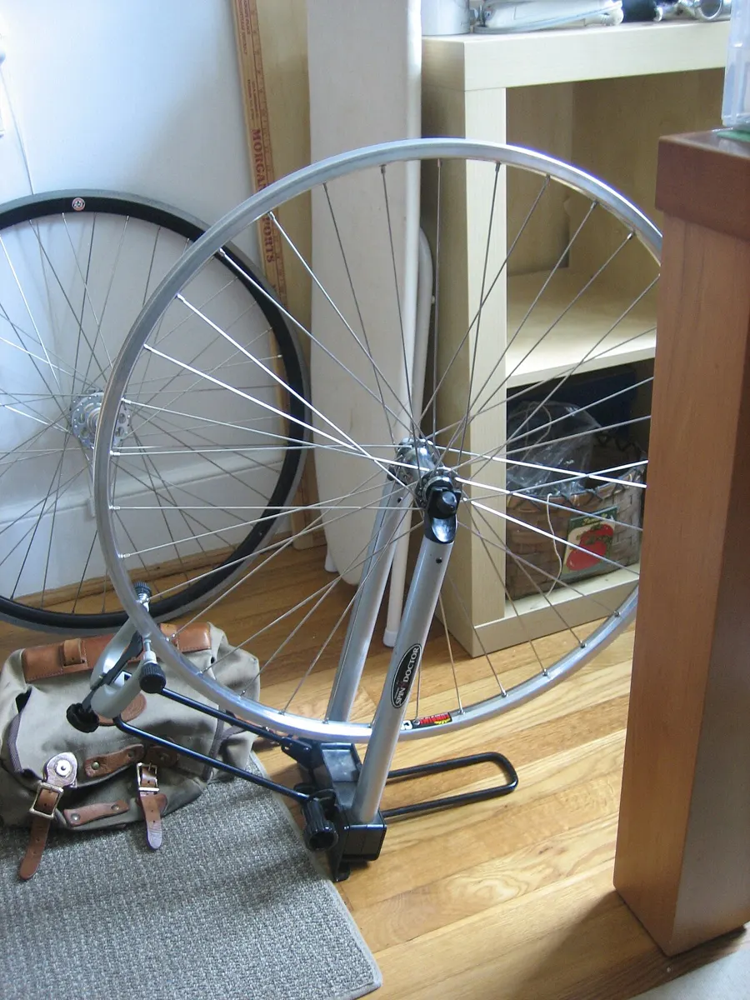

Инструкция · Колёса и шины
Сборка колеса своими руками: спицовка, натяжение, правка
Сборка колеса — классическое ремесло веломеханика. Нужны обод и втулка с одинаковым числом отверстий, спицы правильной длины, ниппели, стенд и терпение. Ниже — общий порядок; существуют разные школы (методы Шелдона Брауна, Йобста Брандта и др.), выберите одну и придерживайтесь её. Схема спицовки — на диаграмме.

⚠ Важно
- Неправильная длина спиц — частая ошибка: короткие не дают нужной глубины в ниппеле, длинные упираются в обод и могут проколоть камеру.
- Не превышайте максимальное натяжение, указанное производителем обода.
Пошагово
- 1Подберите детали: число отверстий обода и втулки совпадает (часто 28, 32 или 36). Выберите схему: радиальная (только для передних колёс без дискового тормоза и для обода, допускающего такую спицовку), «в два креста» или «в три креста» — самая распространённая для 32/36 спиц.
- 2Измерьте эффективный диаметр обода (ERD), диаметр окружности отверстий фланцев и расстояние от центра втулки до каждого фланца. Рассчитайте длину спиц для каждой стороны — например, в нашем калькуляторе — и сверьте с калькулятором производителя.
- 3Слегка смажьте резьбу спиц и наружную поверхность ниппелей (там, где они касаются обода) — так натяжение пойдёт ровно.
- 4Спицы разделяются на четыре группы по N/4: ведущие и ведомые на правом и левом фланцах. Начните с ключевой спицы рядом с ниппельным отверстием обода и вставляйте спицы через одно отверстие фланца.
- 5Классическое правило: спицы по обе стороны от отверстия ниппеля идут параллельно, не перекрещиваясь над ним, — так удобно подключать насос.
- 6При спицовке «в три креста» каждая спица пересекает три другие спицы своего фланца; на последнем перекресте спица проходит под соседней (переплетение).
- 7Наживите все ниппели на одинаковую глубину (например, пока резьба спицы не скроется в ниппеле).
- 8Подтягивайте ниппели кругами — каждый на одинаковое число оборотов (по половине или целому обороту), пока спицы не начнут держать обод без провисания.
- 9Правка: устраните «восьмёрку» (боковое биение), затем «яйцо» (радиальное биение) — как в инструкции по правке.
- 10Центровка: для задних колёс и колёс под диск обод должен стоять по центру между контргайками — проверяйте дишингом.
- 11Постепенно доведите натяжение до значений, рекомендованных производителем обода, проверяя тензиометром; натяжение спиц одной стороны должно быть равномерным.
- 12Снимите напряжения: сожмите пары спиц руками по кругу, затем снова проверьте правку и центровку. Повторите 2–3 раза.
- 13После первых 50–100 км проверьте колесо ещё раз.